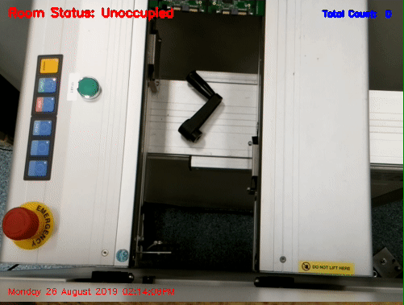
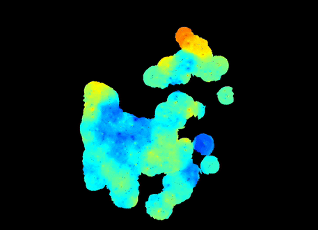
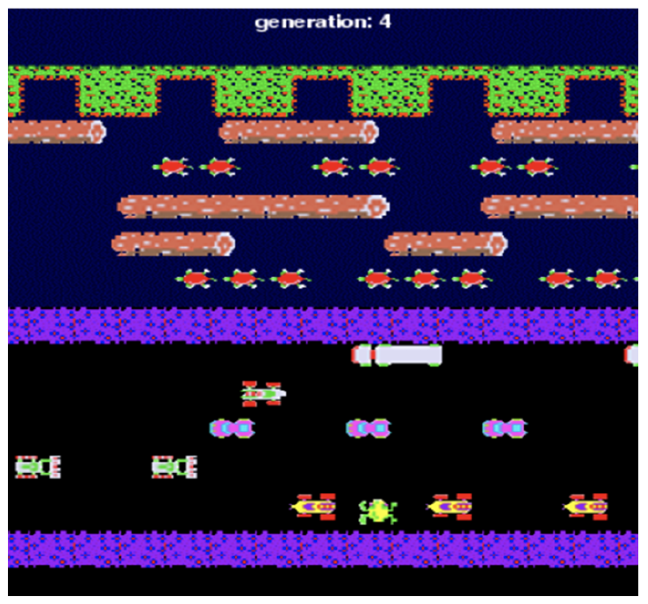

EXPERIENCE
Home | Education | Experience | CV | Contact
| Work Experience |
| Junior Test Engineer, Wintec Industries |
| - Build a File Transfer Protocol (FTP) Server under Linux to which the operating machines can automatically transmit the log files. - Write C++/CLI script to build a user-friendly Graphical User Interface (GUI) for the production line operators to use FTP. (repo: FTP with GUI) - Implement Moving-Object Surveillance approach for calculating the productivity of the Printed Circuit Board (PCB) and monitoring the production lines using Python and Open CV in Raspberry Pi 4 integrated with Pi camera. (repo: Object Surveillance) |
| Research Experience |
| Master Research: Improved Visualization of Fiber-based Fluorescence Lifetime Imaging in a Clinical Setting |
| - Apply algorithms to fluorescence lifetime imaging (FLIm) data visualization to help the classification of cancerous tissues (as Figure in the middle shows) - Construct a Graphical User Interface (GUI) tool for FLIm data visualization in MATLAB for research purposes - Propose a more robust algorithm for Real-time FLIm Visualization for clinical applications |
| Coursework Project: Improvement in Reinforcement Learning for Frogger Game |
| - Regenerate the arcade game “Frogger game” using Python with PyGame - Apply the reinforcement learning algorithm (Q-learning) to Frogger game and analyze its performance - Exploit nearest neighbor interpolation approach to improve the performance of the Q-learning for the Frogger game |
| Coursework Project: Human Following Robot Based on Reactive Algorithm for Safe Navigation |
| - Construct a simulation environment using MATLAB/Simulink - Utilize Simulink toolbox and MATLAB script to simulate a human following robot (Pioneer 3-DX) - Apply biological obstacle-avoidance algorithm to the sensors and analyze the performance in the synthetic environment |
|  |  |  |